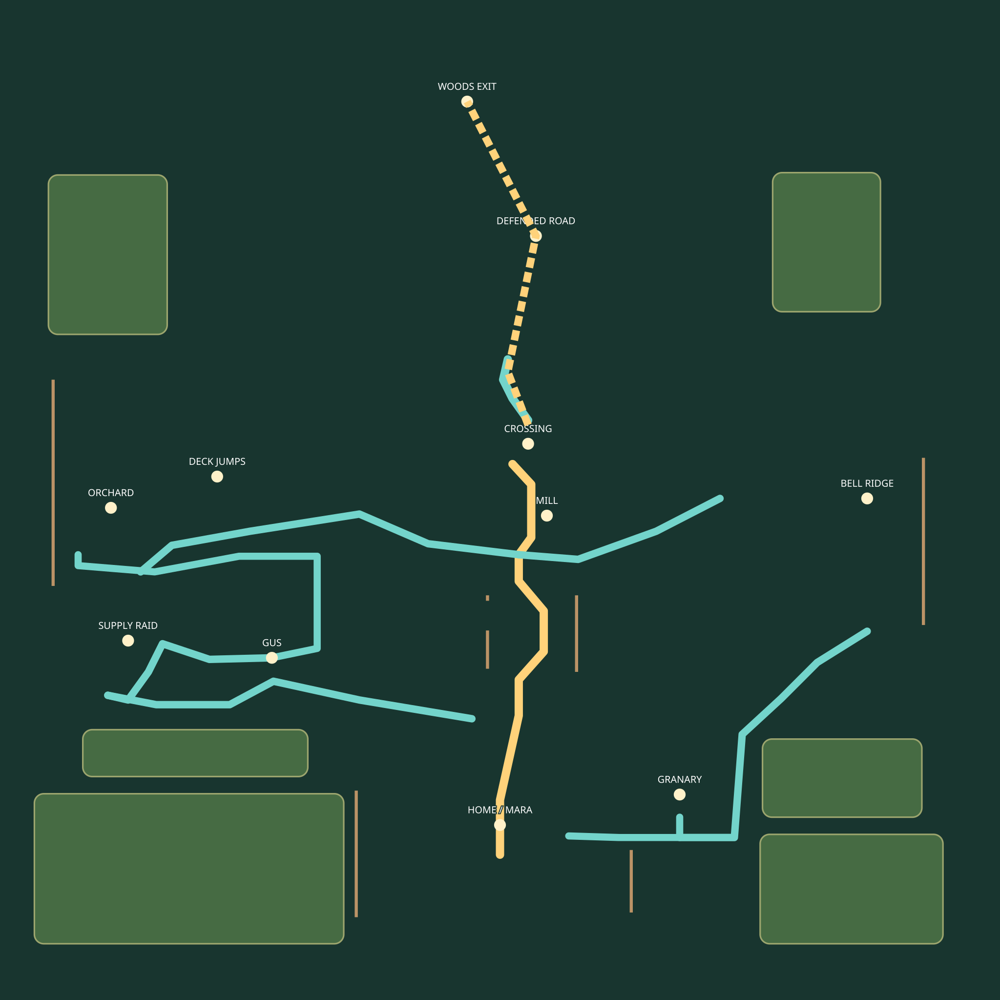
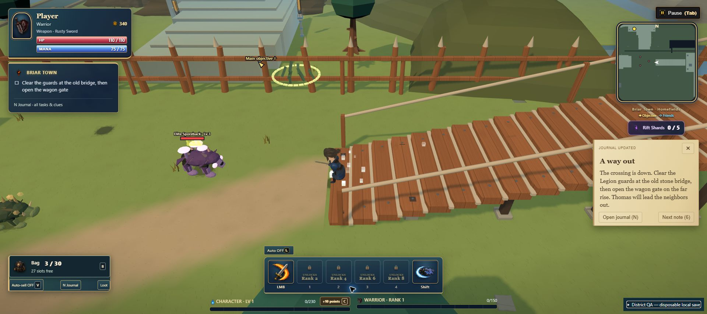

← Campaign plansBriar Town: a connected working landscape
Implemented in v2.342 · physical route and quest-gate checks complete. Human pacing review remains.
Gold: main journey. Mint: exploration loops. Green enclosures: planted hills and woodland boundaries, replacing misleading empty corners.

Village and treatment courtyard → raided farm lane → working mill crossing → defended escape road. The western supply/workshop/orchard circuit and eastern granary/watchtower circuit return to the mill approach. Picking decks hold one relocated existing gear chest. The river crossing, quests, existing voice lines and overall map bounds stay intact.
Open full-size map →
Actual in-game return stair

A blueprint guides construction; it does not establish fun or unfamiliar-player discovery.